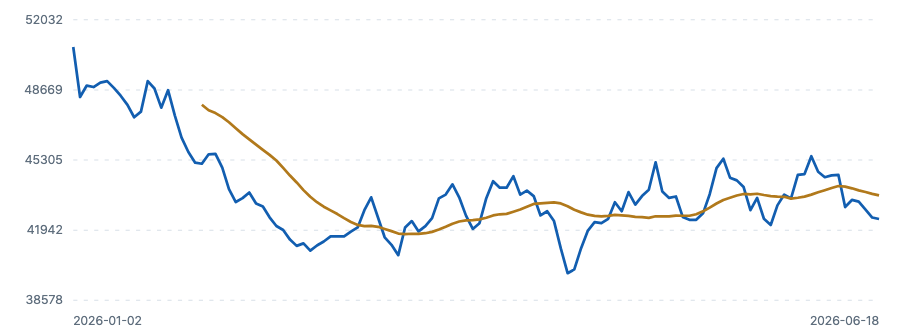

누구의 어떤 문제
첫 직장 1~2년차가 「기준금리 동결」 뉴스를 봐도 어느 숫자를 봐야 할지 몰라 예금·대출 결정을 다음으로 미룹니다.
핵심 기능 화면

차트는 외부 라이브러리 없이 SVG 로 그렸습니다. 인터넷이 없어도 열립니다.
사용한 데이터와 출처
| 자료 | 출처 | 확보일 | 한계 |
|---|---|---|---|
| 뉴스 5건 | 한국은행 보도자료 RSS | 2026-09-11 | 제목·주소·발행일만 · 본문 전문 미포함 |
| 한국 장기금리 (월간) | OECD · IRLT (CC BY 4.0) | 2026-09-11 | 월평균 값 · 예금 금리나 특정일 시장금리 아님 |
| 가상 주가 | 교육용 합성 (SYNTHETIC_NOT_REAL) | 2026-08-25 | 실제 종목 아님 |
테스트 결과 요약
작성 예시: 시나리오 5개 중 4개 통과 · 1개는 수정 후 재확인으로 기록하는 방법입니다. 실제 수강생의 실행 기록이 아닙니다. 자동 검사(test.html)는 4개 중 4개 통과합니다.
자세한 내용: docs/qa_scenarios.md
한계와 다음 개선
- 주가는 가상 데이터입니다. 실제 종목·시세로 바꾸려면 재배포 조건을 먼저 확인해야 합니다.
- 실시간이 아닙니다. 확보일 기준 저장본입니다.
- 다음 개선: 기간 선택 · 지표 카드 추가
결제 버튼·광고·가입 폼을 넣지 않았습니다. 무료 요금제는 개인·비상업 용도입니다.